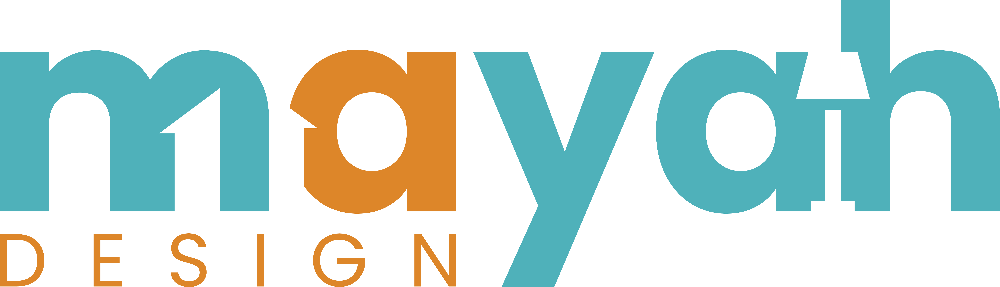
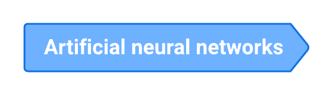
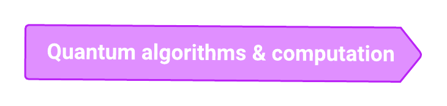

|
Haiyue Zhang
I am a first-year M.S. Computer Science student at the Columbia University.
Prior to joining Columbia in 2024, I earned my B.S. degree in Computer Science + Statistics from University of Illinois Urbana-Champaign.
I am interested in Software Engineering, Machine Learning, Nature Language Processing, Database Management, Cloud Computing.
I am seeking a full-time SDE/DS/MLE position after graduation.
Feel free to drop me an e-mail, if you are interested in me or potential collaborations!


|
|
Education
M.S. in Computer Science
Sep 2024 - May 2026
Columbia University
|
|
B.S. in Computer Science + Statistics
Aug 2020 - May 2024
University of Illinois Urbana-Champaign (UIUC)
|
|
|
Work Experience
Amazon Web Service Boston, MA
Software Engineer Aug 2024 - October 2024
Collaborated with senior engineers to design and implement a Knowledge Assistant, a retrieval system utilizing
S3 buckets stored codebases and tech docs integrated into Bedrock Knowledge Bases with OpenSearch Service as
vector store, enabling real-time feature discovery across packages and contextual troubleshooting from past projects.
Leveraging EventBridge, SNS, and Lambda orchestrated with Step Functions to implement periodic tech docs
updates and event-driven codebases synchronization, with package changes triggering Lambda functions, achieving
90% coverage on engineers’ questions, ensured reliability through code reviews, unit/integration testing and CI/CD.
Developed a chunking pipeline that parses Abstract Syntax Trees to align chunks with function and class boundaries,
eliminating token-split issues and saving 520 engineering hours each, annually ($3.1M) in a 60-person organization
|
|
Microsoft Shanghai, China
Machine Learning Engineer May 2024 - Aug 2024
Established baseline with several machine unlearning techniques such as Split learning, Certified Data Removal to "forget" data from trained models like logistic regression, LSTM, MLP on time series, tabular, and image datasets.
Implemented machine unlearning framework on hospital's system, enhancing clinical data privacy by enabling data deletion and verifying unlearning effectiveness in trained models, while maintaining approximately 80% accuracy.
Implemented a dockerized, flexible operational workflow integrating with kubernetes supporting continuous
integration automation of new features of the system, supporting future functionalities testing and release, replacing
manual testing, deployment scripts, and standard operating procedures (SOPs) and saving 6 hours per week.
|

|
Mayah Design New York, NY
Software Engineer Sep 2024 - Present
Implemented an innovative personalized furniture recommendation platform with responsive, cross-browser frontend
built in React, styled with Bootstrap, enabling user to explore furniture tailored to preferences.
Built backend endpoints using Java, SpringBoot, and RESTful APIs to enable low-latency, high-performance
communication, deployed PostgreSQL databases with 20+ tables on AWS RDS and hosted web servers on EC2.
Executed a Network Load Balancer for backend services, replacing a single fixed-size cluster with multiple auto-scaled
sub-clusters based on real-time traffic predictions, saving $160 per month and increasing 9% success rate.
Developed an advanced recommendation system that provides personalized furnishing suggestions, offering customers a seamless design experience tailored to their unique style preferences and industry best practices.
|

|
Siebel School of Computing and Data Science Champaign, IL
Course Assistant Jan 2023 - May 2024
Hosted weekly Office Hour to support students, clarifying database programming languages (Mysql, MangoDB, Neo4j) and database concepts (Designing Schemas, Querying Databases, Manipulating Databases, Indexing Data).
Managed grading rubrics, ensuring meticulous evaluation of machine assignments and final capstone projects.
Regularly attended course assistants' meetings, collaborating to enhance and refine curriculum content.
|
|
|
Research & Projects
Illinois Risk Lab Champaign, IL
Research Assistant Under Professor Frank Quan Aug 2023 - Dec 2023
Implemented and compared various optimization techniques, including Google OR-Tools, PyVRP, VRPy, and strategies from Amazon, to enhance delivery efficiency and reduce costs for a top-tier pharmacy company.
Utilized Map API to capture real-world transit data and duration to generate distance/time matrix for models.
Crafted innovative graph algorithms to optimize routes, reduce fuel use, and elevate delivery efficiency.
|
|
Undergraduate Research Experience in Statistics (URES) Champaign, IL
Research Assistant Under Professor Steven A. Culpepper Aug 2023 - Dec 2023
Completed a project mastering Bayesian regression methods for binary, polytomous, and multiple outcome variables.
Analyzed heart attack dataset using advanced techniques like Hamiltonian Monte Carlo and Horseshoe Prior to build a Bayesian model and predict the effectiveness of blood pressure, cholesterol, fasting blood sugar, and more.
|
|
University of Science and Technology of China Hefei, China
Research Assistant Under Professor Xiangyang Li and Qi Song May 2023 - Aug 2023
Work on integrating Knowledge Graphs into Large Language Models to enhance LLM’s reasoning capabilities.
Tasked with embedding KG into LLM with a priority to maintain and enhance LLM model sophistication.
Utilized knowledge augmentation, refining LLMs’ embedding and KGs for pretraining enhancements, and developed the KEFF framework with modules for knowledge enhancement and filtering.
|

|
Web-based scheduling Application: Parachute Champaign, IL
Codevelop with Raymond Wu, Yu Qian, Yuteng Zhuang Jan 2023 - Dec 2023
Employed as a fullstack engineer, building Parachute.fyi, an advanced web-based scheduling tool eclipsing
when2meet.com by providing a sophisticated user interface and authentication system, employing cutting-edge technologies including React, Next.js, TypeScript, Prisma, tRPC, and PostgreSQL.
|
|
|
Conference
Journal
-
Quantum circuit autoencoder
Jun Wu, Hao Fu, Mingzheng Zhu, Haiyue Zhang, Wei Xie, Xiang-Yang Li
PHYSICAL REVIEW A.
 
|